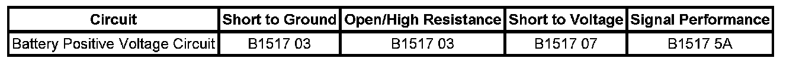

B1517
DTC B1517
DTC DESCRIPTORS
DTC B1517 03
Battery Voltage Below Threshold
DTC B1517 07
Battery Voltage Above Threshold
DTC B1517 5A
Battery Voltage Plausibility Failure
DIAGNOSTIC FAULT INFORMATION

Perform the Diagnostic System Check - Vehicle prior to using this diagnostic procedure. Initial Inspection and Diagnostic Overview
CIRCUIT/SYSTEM DESCRIPTION
The body control module (BCM) has designated circuits for monitoring vehicle system voltage. The BCM monitors the system voltage to ensure that the voltage stays within the proper range. Damage to components, and incorrect data may occur when the voltage is out of range. The BCM monitors the system voltage over an extended length of time. If the BCM detects the system voltage is outside an expected range for the calibrated length of time, or the BCM battery sense circuits differ by 2 volts, DTC B1517 will set. Other modules also monitor system voltage the system voltage message is sent to the other modules and will default to 12.9 volts.
CONDITIONS FOR RUNNING THE DTC
The DTC shall run only if the BCM has power, ground, and the ignition is not in the START mode. This DTC shall execute regardless of battery voltage.
CONDITIONS FOR SETTING THE DTC
B1517 03
The battery voltage falls below 12 volts, engine speed greater than 1,100 RPM for 120 seconds or the battery voltage falls below 11 volts, engine speed less than 1,100 RPM for 120 seconds.
B1517 07
The battery voltage rises above 16 volts for 15 seconds.
B1517 5A
The battery voltage differs by 2 volts on the BCM battery sense circuits for 10 seconds.
ACTION TAKEN WHEN THE DTC SETS
The driver information center (DIC) displays the SERVICE BATTERY CHARGING SYSTEM warning message and the Charge Indicator on the instrument panel cluster (IPC) illuminates.
CONDITIONS FOR CLEARING THE DTC
- The DTC will clear current status when fault is no longer present.
- The history DTC will clear after 50 consecutive ignition cycles have occurred without a malfunction.
DIAGNOSTIC AIDS
IMPORTANT: With any module voltage performance DTC, always perform the Charging System Test to ensure the charging system is functioning properly. Charging System Test
CIRCUIT/SYSTEM TESTING
1. If the DTC is history, refer to Charging System Test. Charging System Test
2. If the DTC is current, turn ON the ignition, and with a DMM, measure the voltage between the battery positive voltage circuits of the BCM and the ground circuits of the BCM.
- If the voltage is within 9.5-15 volts, replace the BCM.
- If the voltage is not within 9.5-15 volts, measure the voltage between the battery positive voltage circuits of the BCM and a separate ground.
- If the voltage is within 9.5-15 volts, test the battery positive and ground circuits of the BCM for high resistance or an open, and repair as necessary.
- If the voltage differs by more than 2 volts, repair the circuit as necessary.
REPAIR INSTRUCTIONS
Perform the Diagnostic Repair Verification after completing the diagnostic procedure. Verification Tests
Control Module References for BCM replacement, setup, and programming. Programming and Relearning